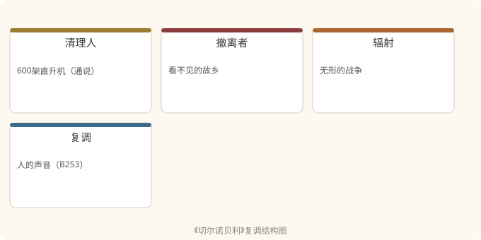

切尔诺贝利的祭祷
一、基本信息
| 作者 | 斯韦特兰娜·阿列克谢耶维奇 |
|---|---|
| 成书/出版 | 1997年（作者页 B253 口径：Voices from Chernobyl (1997)） Svetlana Alexievich — Encyclopaedia Britannica（百科全书） |
| 国别/地区 | 白俄罗斯 |
| 时代 | 现当代 · 20世纪 |
| 体裁 | 口述实录 |
| 语言 | 俄语 |

《切尔诺贝利》复调结构图（主题·结构图）
二、创作背景
作者页（B253）：阿列克谢耶维奇 works 载'Voices from Chernobyl (1997)'（B253 作者页定位）。
方法（B253）：'human voices were allowed to speak for themselves'（让人的声音自己讲述）——核灾幸存者、清理人、撤离者的独白。
诺奖授奖词（B253）：'for her polyphonic writings, a monument to suffering and courage in our time'。
三、内容脉络
幸存者与清理人的独白：'我们不知道辐射是什么'（通说待核）。
被撤离的村庄与' radioactive love'（通说待核）。
四、主要人物表
| 人物 | 身份 | 说明 |
|---|---|---|
| 清理人 | 消防员等 | （通说待核） |
| 撤离者 | 村民 | （通说待核） |
五、主题与艺术特点
- 核灾的个人史（通说）。
- '看不见的战争'（通说待核）。
- 复调：无作者评论（B253 方法）。
六、影响与评论
- 作者页：阿列克谢耶维奇作品谱系（B253 作者页口径）。
Svetlana Alexievich — Encyclopaedia Britannica（百科全书） - 作者页：2015年诺奖——复调书写（B253）。
Svetlana Alexievich — Encyclopaedia Britannica（百科全书）
七、阅读建议
难点
- 核术语与单位。
- 独白的情感密度。
- 《切尔诺贝利的祭祷》（中信出版社，通说待核）。
- 俄文原版。
对照《二手时间》：阿列克谢耶维奇的两个'灾难'。
八、待核实
- 中译本信息核对。
- 独白人物数与结构待核。
- '祭祷/祈祷'译名差异待核。